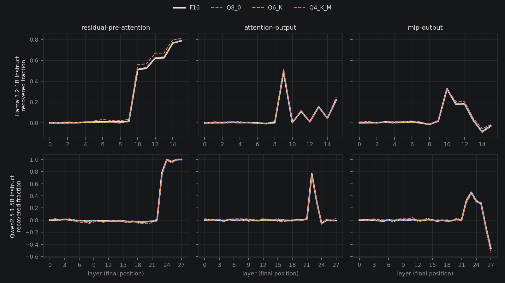
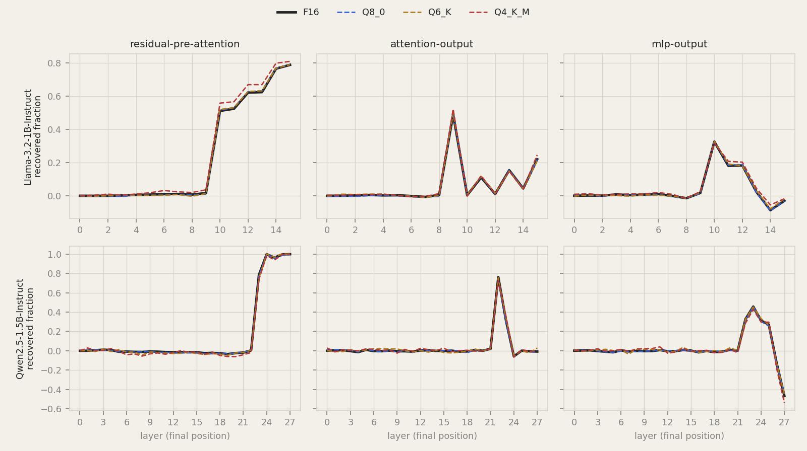
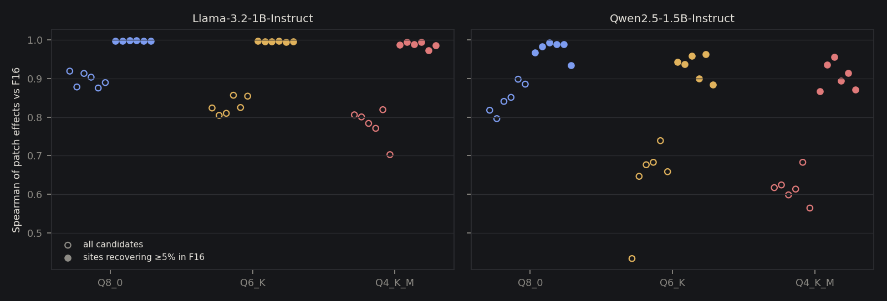
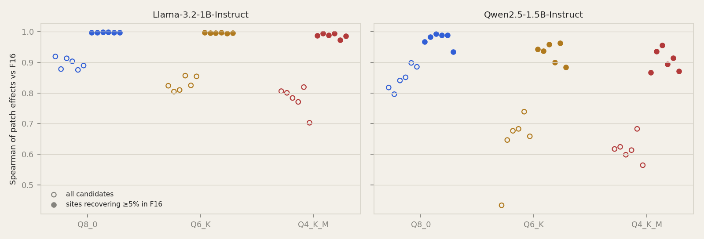

أغلب الناس اللي يسوّوا activation patching على لابتوب، يشتغلوا على ملف GGUF مضغوط، عشان هو اللي يقدروا يشغّلوه. طيب السؤال: هل دي نفس التجربة لو سوّيناها على الموديل الأصلي اللي انضغط منه؟
سوّيت patch لكل candidate على أربع نسخ من موديلين، وقارنت كل نسخة مضغوطة بأصلها الـF16. الأماكن اللي شايلة الجواب طلعت متفقة مرة في كل النسخ. بس ترتيب الأماكن اللي تأثيرها شبه صفر ما اتفق، وهادا الاختلاف هو اللي كسر القاعدة اللي كتبتها قبل ما أبدأ.
موديلين instruction صغار، قالب واحد لاسترجاع معلومة، وست أزواج prompts بس. يعني ما نقدر نقول منها شي عن موديلات أكبر، ولا circuits تانية، ولا quantizers غير حق llama.cpp. والـF16 هنا مرجع، مو الحقيقة المطلقة: هو نفسه تقريب لأوزان BF16 الأصلية.
الـprompt هو The capital of {country} is the city of. الـprompt النضيف فيه دولة، والـcorrupted فيه دولة تانية، وعندنا ست أزواج زي فرنسا وإيطاليا. المقياس هو logit عاصمة النضيف ناقص logit عاصمة الـcorrupted عند آخر موقع.
كل موديل له أربع مستويات: ملف F16 الأصلي، وبعدين Q8_0 وQ6_K وQ4_K_M، كلهم مطلوعين من نفس الملف بنفس نسخة llama.cpp المثبّتة. يعني الفرق الوحيد بين المستويات هو الضغط، ولا شي غيره.
الـcandidate هو مكان واحد (الـresidual stream الداخل للـblock، أو مخرج الـattention، أو مخرج الـMLP) في layer واحدة وعند token واحد. المواقع تبدأ من token الدولة لين الآخر، لأن اللي قبلها نفسه بالضبط في الـpromptين. كدا يطلع عندنا 240 candidate لكل تشغيلة Llama و420 لكل تشغيلة Qwen.
كل candidate انعمل له patch حقيقي: الـprompt الـcorrupted يشتغل وفيه الـactivation النضيفة مكتوبة في داك المكان بس. التأثير المقاس هو كم تغيّر المقياس، والـrecovered fraction هو التأثير مقسوم على الفجوة بين النضيف والـcorrupted. التقدير الأرخص حق Ember انحفظ، بس مو هو اللي نقارنه هنا.
الـ72 تشغيلة كلها جاوبت صح: كل prompt نضيف يفضّل العاصمة الصح، وكل corrupted يفضّل التانية. وكل bundle عدّى الـverify، والـhashes حقته موجودة في ملف الـprovenance المنشور.
قبل أي تشغيلة سجّلت قاعدة قرار: المستوى ينحسب إنه يعطي نفس استنتاجات F16 إذا في كل زوج كان Spearman للتأثيرات المقاسة على كل الـcandidates 0.9 أو أكتر، وأقوى مكان هو نفسه، والأماكن اللي ترجّع 20% أو أكتر من الفجوة تتداخل بـJaccard 0.8 أو أكتر.
ولا مستوى في أي موديل نجح. Q8_0 حق Llama، وهو الأقرب للـF16، وصل median Spearman 0.90 وطابق أقوى مكان في زوج واحد بس من ستة. وQ4_K_M حق Qwen وصل median 0.62.
الشرط التالت مشي تقريباً في كل مكان: الأماكن المهمة تداخلت بـJaccard 0.85 أو أكتر في كل مستوى. اللي طاحوا هم أول شرطين، فرحت أشوف إيش هم يقيسوا أصلاً.
أغلب الـcandidates تأثيرها شبه ولا شي. في F16، 75% من candidates حق Llama و87% من حق Qwen ترجّع أقل من 2% من الفجوة. ضوضاء الضغط تلخبط ترتيب التأثيرات الصغيرة دي على كيفها، والـrank correlation على كل الـcandidates يصير في الغالب يقيس اللخبطة دي بس.
وفوق القائمة تقريباً تعادل. لو سوّيت patch للـresidual stream عند token الدولة في أي layer بدري، ترجع الفجوة كلها تقريباً، فأحسن مكانين في F16 الفرق بيناتهم 0.4 نقطة مئوية بالكتير. مين يجي الأول قريب من إنك ترمي عملة. وفي كل مستوى، أقوى مكان في النسخة المضغوطة يرجّع في حدود 1.5 نقطة من أحسن مكان في F16.
يعني القاعدة كانت تختبر شيئين ما يفرقوا في التفسير: ترتيب الأماكن الهامشية، والترتيب جوّا التعادل.
لو حصرنا المقارنة في الأماكن اللي ترجّع 5% أو أكتر من الفجوة في F16، التأثيرات تطلع متفقة مرة. منحنى كل مستوى على الـlayers راكب فوق منحنى F16 تقريباً.


| الموديل | المستوى | Spearman، كل الـcandidates (median) | Spearman، الأماكن ≥5% (أسوأ زوج) | أكبر غلطة في الـrecovered fraction | layer التسليم نفس F16 |
|---|---|---|---|---|---|
| Llama-3.2-1B | Q8_0 | 0.90 | 0.997 | 1.6 نقطة | 6 من 6 |
| Llama-3.2-1B | Q6_K | 0.82 | 0.995 | 6.5 نقطة | 5 من 6 |
| Llama-3.2-1B | Q4_K_M | 0.80 | 0.972 | 8.5 نقطة | 5 من 6 |
| Qwen2.5-1.5B | Q8_0 | 0.85 | 0.934 | 3.8 نقطة | 6 من 6 |
| Qwen2.5-1.5B | Q6_K | 0.68 | 0.883 | 4.6 نقطة | 6 من 6 |
| Qwen2.5-1.5B | Q4_K_M | 0.62 | 0.867 | 8.5 نقطة | 6 من 6 |
layer التسليم هي أول layer يرجّع فيها الـresidual stream عند آخر موقع نص الفجوة، يعني المكان اللي يوصل فيه الجواب لآخر token. طلعت نفس F16 في 34 من 36 مقارنة، والتنتين الباقيات جت قبلها بـlayer وحدة. وأقوى مخرج attention أو MLP طلع نفس F16 في الـ36 كلها.
والفجوة نفسها تتحرك حوالي 5% بالكتير. الضغط ما غيّر إيش يعرفوا الموديلين عن العواصم، ولا فين ينقلوا المعلومة دي.


Qwen يتأثر أكتر من Llama. في Q4_K_M أسوأ زوج عنده ينزل لـ0.87 على الأماكن المهمة، وLlama عند 0.97، والمنحنيات لسّا تنقرا بنفس الطريقة. وبست أزواج بس لكل موديل، ما أبغى أبني على الفرق دا أكتر من كدا.
في الموديلات دي والمهمة دي، نسخة Q4_K_M تلاقي نفس الأماكن، وأحجام تأثير في حدود نقاط قليلة، ونفس layer التسليم زي F16. يعني تحديد فين تنشال المعلومة يصمد قدام الضغط.
بس فيه عادتين ما يصمدوا. إنك تقرا الترتيب بين التأثيرات الصغيرة، دا تقرا ضوضاء. والـrank correlation على كل الـcandidates تتحكم فيه التأثيرات الصغيرة دي، فيقلّل من الاتفاق على المهم، وما ينفع يكون الرقم الرئيسي في مقارنة patching. الأحسن تنشر أحجام التأثير فوق حد معلن.
والقاعدة اللي كتبتها من قبل وقعت في الغلطة دي بالضبط. وهي لسّا في مجلد الدراسة زي ما كتبتها، وجنبها التشخيصات اللي انضافت بعد أول تشغيلة، ومكتوب عليها إنها استكشافية.
التصميم والسكربت والنتايج والرسومات والـhashes حق كل bundle موجودة في research/quant-attribution. والتصميم انحفظ في git قبل أول تشغيلة.
python research/quant-attribution/run_study.py run --ember target/release/ember --out runs/quant-attribution
python research/quant-attribution/run_study.py analyze --out runs/quant-attribution --results results --figures